Every time I come out to Waconia, and I come out more and more often, it has a Leave It to Beaver feel. It feels like the kind of town I grew up in. It feels untouched.
And I think it feels untouched because people move here on purpose. They want to know their neighbors and keep it a good place to live.
Stand on Lake Street downtown and look out at the water, and you'll see a low line of trees sitting on the lake. That's Coney Island of the West: an old resort island with streets named for German writers, a lawn where the Gophers once practiced, and no bridge. Here's how to get out there, the story behind it, and what Waconia is like to live in.
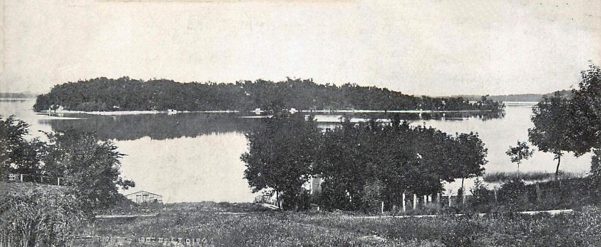
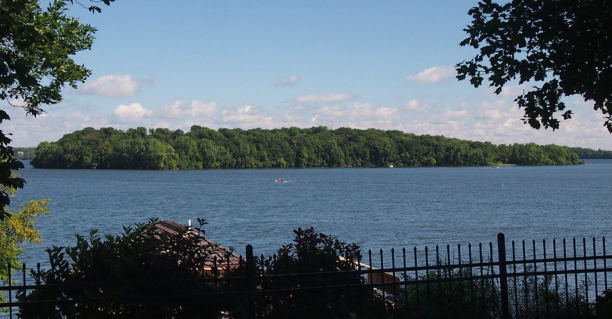
The short version
Coney Island of the West is a wooded island of about 34 acres, roughly half a mile off Waconia's shore, in Carver County. From the 1880s into the early 1960s it was a resort, with hotels, cottages, a dance pavilion and, for three seasons, the Gophers' preseason football camp. Then it sat empty for decades. Carver County bought it in 2016 and opened it to everyone in late August 2020. It's boat only, about a mile from the county launch. Back on shore, Waconia has a walkable Main Street and a candy shop named after the island.
Plan your boat day
- Getting there: Boat only. There's no bridge, ferry or water taxi. Any boat, kayak or personal watercraft works.
- Launch: The public boat access at Lake Waconia Regional Park, on the south shore just east of downtown. Two boarding docks and trailer parking. The park is open 6 a.m. to 10 p.m.
- Distance: About a mile, or a little less, to either island dock.
- Where to land: Docks on the west end (Amblard's Point) and the east end, plus a sandy landing on the east side.
- On the island: Shaded picnic tables and grills, first come first served, a seasonal restroom, and a half-mile gravel trail between the two ends.
- Rules: Day use only, no camping. Carry out what you bring.
- Bring: Real shoes. The ground is uneven in places.
- Off season: Pontoon rentals at In Towne Marina are done for 2026. Lola's Jingle Bar opens Nov. 6, and the park's sledding hill usually runs December through March.
- Before you go: Check Carver County's Coney Island page for current rules, and the county beach page in late summer.
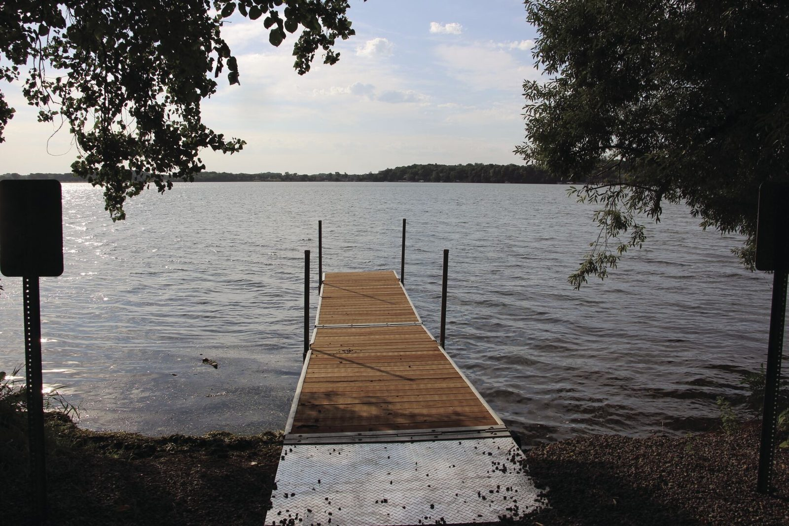
How Coney Island became a resort
In March 1884, Lambert Naegele, who edited a German-language newspaper in Minneapolis, bought the island and gave it a big name: Coney Island of the West. Nobody knows for sure where "Coney" came from. New York, the rabbits once called coneys, and a shortened Waconia are all guesses.
Then he did the thing that still makes me smile. He drew the island up into lots around a park at the center and named the streets for German writers: Goethe, Schiller, Lessing and Uhland. On a wooded island, in a Minnesota lake. Even the lake had another name then: Clearwater Lake.
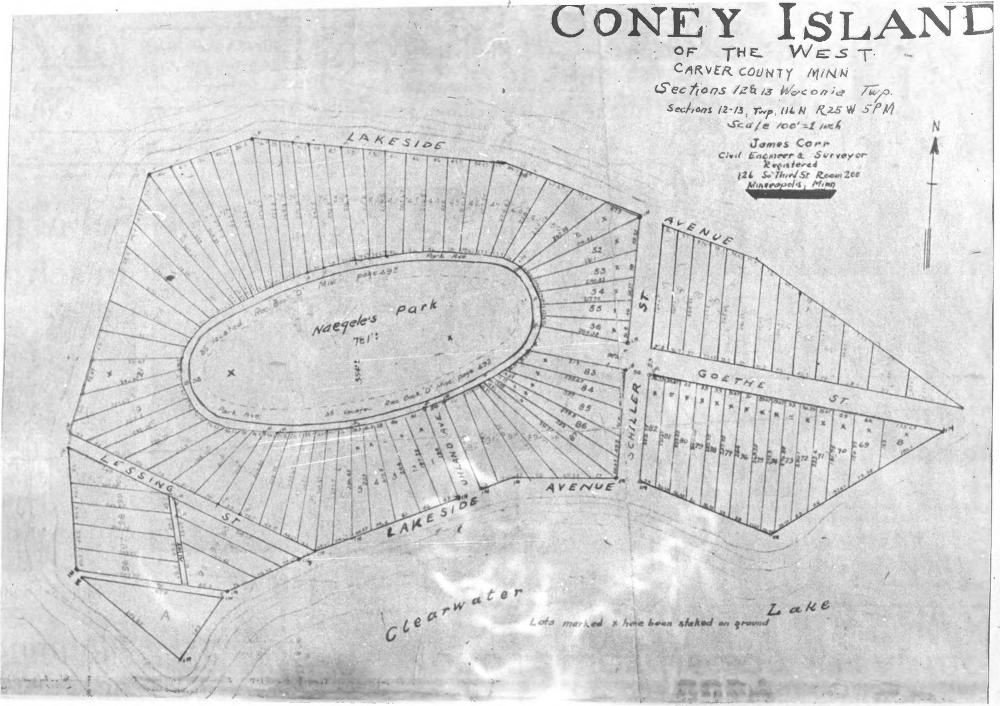
The Zeglin family took over in 1888 and started building the biggest hotel on the island, three stories tall and meant to sleep 100 to 200 guests. Around it were cottages, a dance pavilion, a bowling alley, rowboats to rent and concerts on Sunday. Excursion trains ran out from Minneapolis, and later the railroad put a stop on the north shore called Coney Island. You stepped off the train, and a boat carried you across.
Guests came from as far away as Europe and South Africa, some for the whole summer, and Waconia picked up a nickname: the Paradise of the Northwest. One summer the hotel served 23,546 meals. Even the trouble was small-town. In 1891 two people were indicted for selling liquor on the island without a license.
Gophers football on the island, 1903 to 1905
This is the part everyone repeats, and it's true. For three seasons, the University of Minnesota football team held its preseason practice on the open ground at the island's east end. Henry "Doc" Williams was Minnesota's coach in those years, and the 1904 squad went 13 and 0.
My favorite detail is the timing. In late August 1904 a cyclone tore through Waconia and did real damage on the island. Less than two weeks later, the local paper reported the football squad "diligently training at Coney Island." That east lawn is still open, and today it's where people picnic.
Emile Amblard, the Duke of Clearwater Lake
Emile Amblard, a French wine salesman, arrived in the 1890s and ended up owning about half the island. On the southwest tip he built three villas, laid out gardens, put in a seawall, and then opened the grounds to the public. Every Fourth of July he set off fireworks from his villa, and locals called him the Duke of Clearwater Lake.
When he passed in 1914, he was buried, at his own request, on the point of land across the water, facing the island. The county named the west-end picnic grounds Amblard's Point.
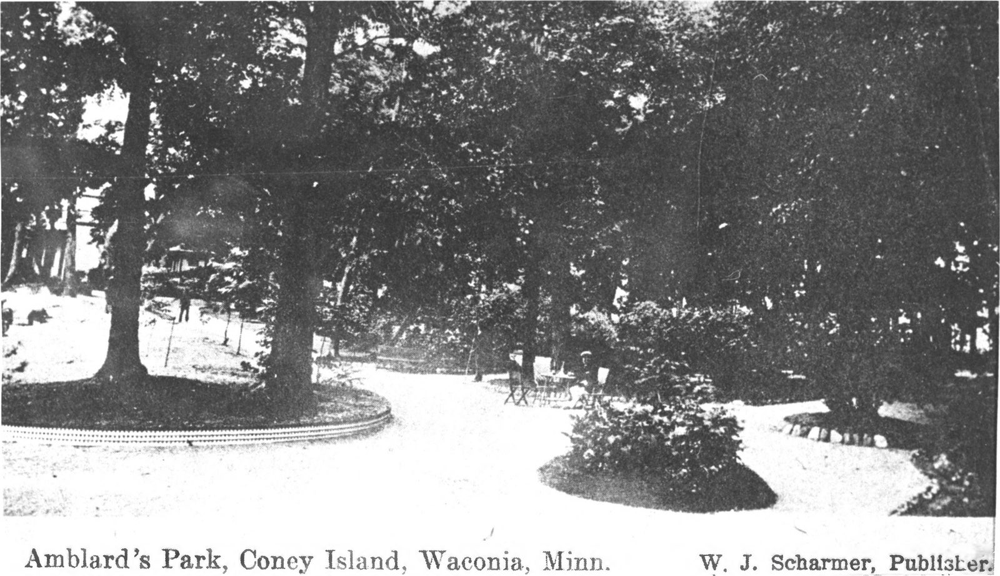
Empty, then a park again
What ended the resort wasn't a storm. It was the car. Once people could drive to lakes farther north, fewer of them took the train to one resort close to home. A new name, Paradise Island, didn't stick. After John Zeglin passed in the late 1930s, Frank "Shorty" Dvorak took over and ran it as a weekend dinner-and-dance spot, and his wife Gertrude's cooking was a big part of why people came. That lasted into the early 1960s.
Then the island just sat, and the brush grew in. A National Register write-up in the mid-1970s said it "could be classified as a ghost town," and it was listed in 1976. In January 1994, fire destroyed an abandoned hotel on the island.
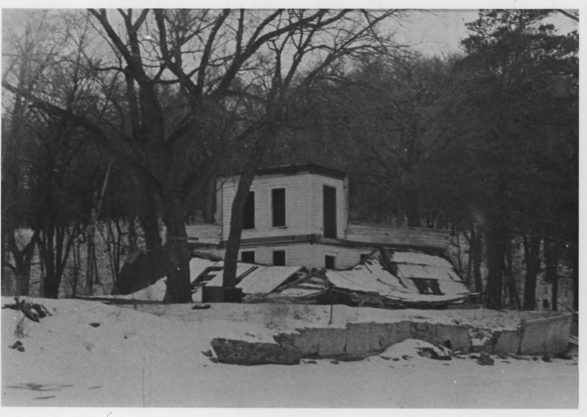
The turn came in the 2000s, when Norman and Ann Hoffman of Waconia began buying up the island after someone proposed a hotel and event venue there. In 2016 Carver County bought it with regional park money, and the Hoffmans sold for less than it appraised for. Four years of archaeology and cleanup followed, and the digging showed signs of people visiting this island for about 1,500 years. In late August 2020 the no-trespassing signs came down.
Thinking about a lake town out here? Call or text me at 952-258-3100 and I'll tell you what I know about Waconia. Or see homes around the lakes.
On the island today
The island is easiest to see west to east. The west dock puts you at Amblard's Point, with shaded picnic tables, grills and a seasonal restroom right beside the old concrete foundations and a fieldstone seawall along the shore.
From there a half-mile gravel trail runs through the woods, past more ruins from the Zeglin resort. It comes out on the big open lawn at the east end, where the football team practiced. That end has its own dock and a sandy landing, and it's where people spread out for picnics and lawn games.
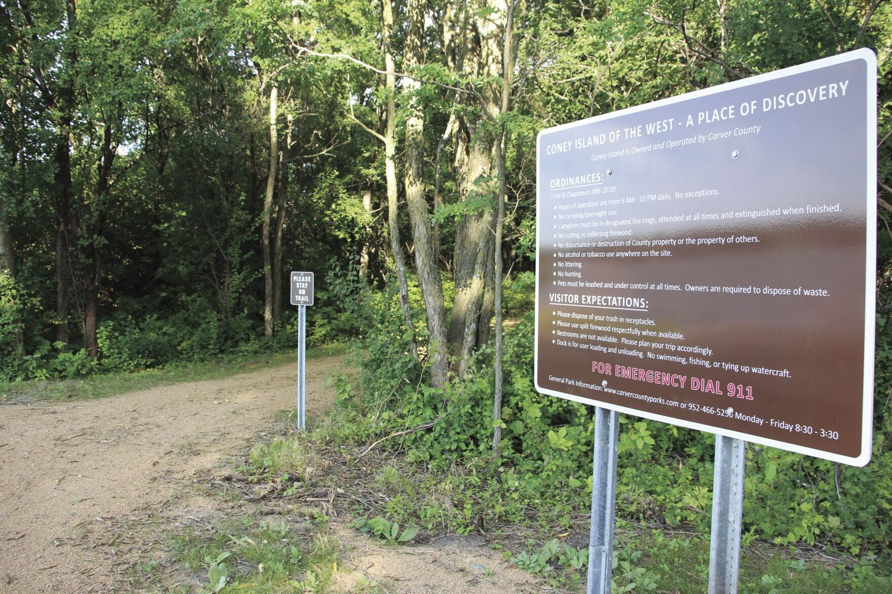
Lake Waconia Regional Park and the beach
Half of a good island day happens on shore. Lake Waconia Regional Park runs 164 acres along the south shore, just east of downtown, with a swimming beach, picnic tables and grills, walking trails, and canoe and kayak storage. Paradise Commons, the waterfront building that opened in 2024, has restrooms, rentals and a Sun Room you can book for up to 80 people. The public boat access next door has two boarding docks and trailer parking.
Come back in winter and there's an 80-foot sledding hill, usually open December through March when the snow cooperates.
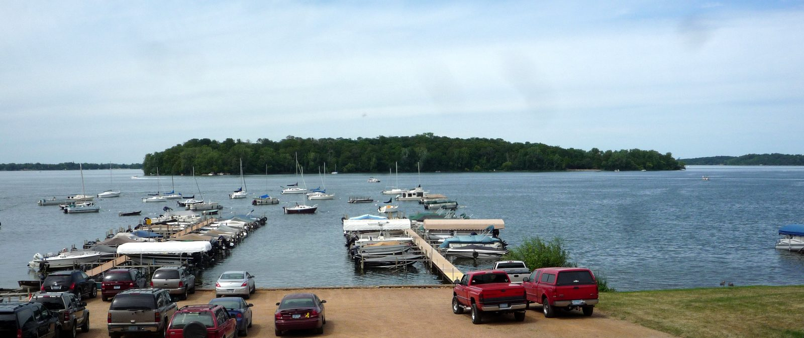
The water: Lake Waconia vs. Lake Minnetonka
A fair question is whether Lake Waconia is as clean as Lake Minnetonka. It depends on which part of Minnetonka you mean.
Lake Waconia is about 3,080 acres. Carver County graded it a B in 2022, 2023 and 2024, which the county calls good water quality, with algae that can get in the way later in the summer. In a typical summer you can see roughly seven to nine feet down. The state doesn't list it as impaired for nutrients. Its only listings are for mercury in fish, which most Minnesota lakes carry, and for its fish community.
Minnetonka is really a lot of lakes stitched together. Its big main basins were clearer than Waconia in 2024, and its western bays, like Halsteds and Stubbs, were much greener. So Waconia lands in between: clearer than Minnetonka's western bays, not as clear as its main basins.
| Lake Waconia | Minnetonka main basins | Minnetonka western bays (Halsteds, Stubbs) | |
|---|---|---|---|
| Summer clarity | About 7 to 9 feet in a typical summer | Clearer than Waconia in 2024 | Much greener than Waconia in 2024 |
| On the state's list for nutrients? | No | No | Yes |
| Carver County grade | B, 2022 to 2024 | n/a | n/a |
One note from this year. On Sept. 1 the county closed the park beach over a suspected blue-green algae bloom, and the reopening notice went out Sept. 4. In late summer, check the county's beach page before you swim.
Downtown Waconia: Coney's, the Basement Arcade and Lola's
There's a cute little candy store that has ice cream. It's called Coney's, at 136 West Main Street, and yes, it's named for the island. A "Coney Island of the West" pennant hangs on the wall by a pair of old water skis, a canoe hangs from the ceiling, and big jars of bulk candy line the shelves. It opened in July in a century-old building and picked up its ice cream when The Main Scoop closed. Closed Mondays.
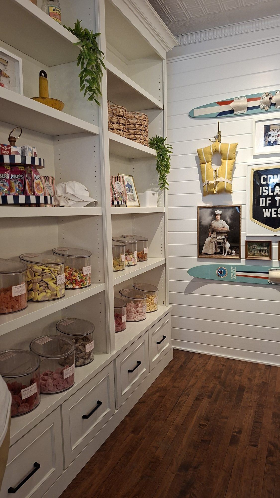
And there's a little secret arcade for kids. The Basement Arcade is at 44 West Main, but you won't find it from the sidewalk. The door is off the alley, down under Shape It Up Fitness. You pay once for open play and the machines run on free play: tabletop Pac-Man, NBA Jam, air hockey, pinball. Open play runs a few weekday afternoons, so check their site first.
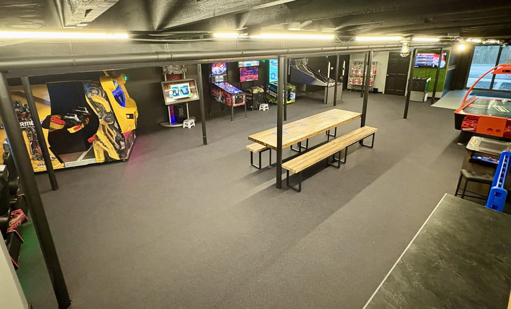
Then head down to the water. Lola's Lakehouse sits right on the lake at 318 East Lake Street, with a patio and its own marina.
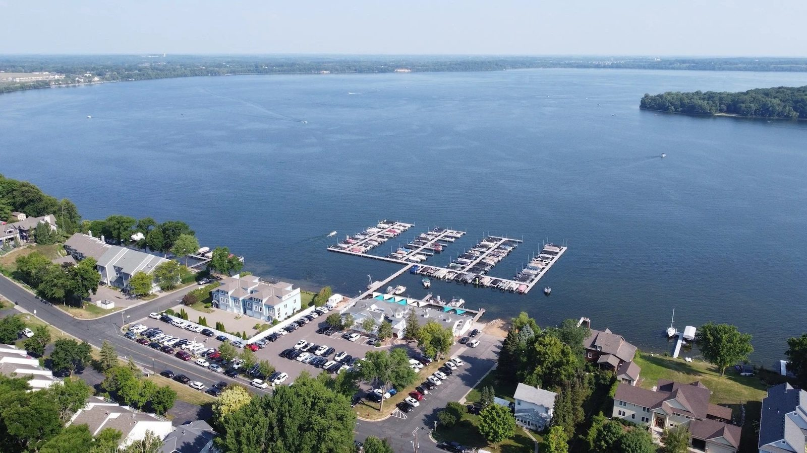
For the holidays Lola's turns into the Jingle Bar, with the ceiling so packed with garland, tinsel, giant ornaments and glowing lights that you mostly look up. It comes back Friday, Nov. 6, 2026. Last year it ran into early January.
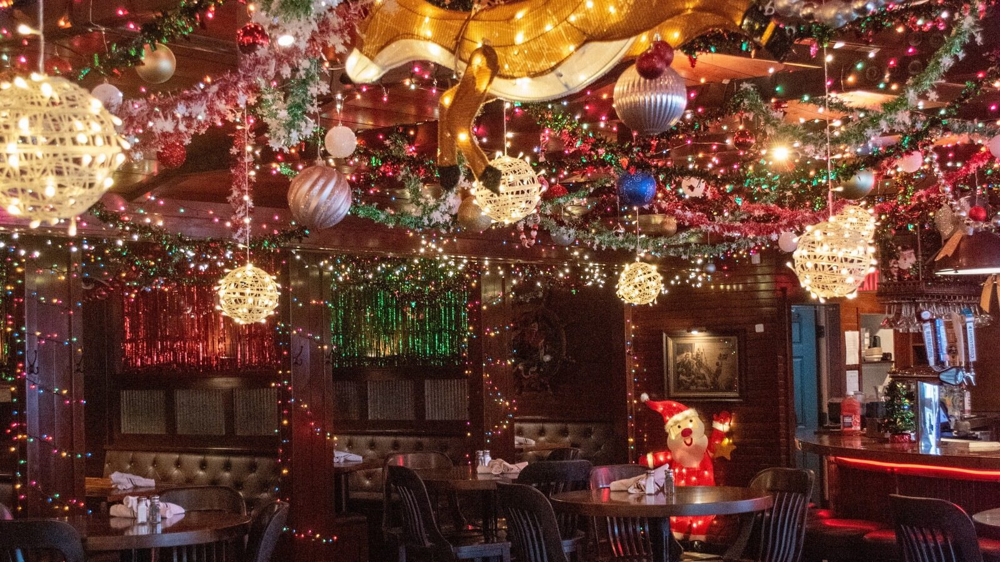
If wine is more your speed, three wineries sit within about five miles of downtown: Schram Vineyards, which also has a brewery, a restaurant and bonfires; Parley Lake Winery, open Friday evening through the weekend; and Sovereign Estate, on the lake's north shore.
Living in Waconia
Families ask about schools first. Waconia Public Schools, District 110, has three elementary schools, Bayview, Laketown and Southview, plus Waconia Middle School and Waconia High School. I'll confirm the assigned schools for any address. Downtown, St. Joseph Catholic STEM School runs from preschool through 8th grade.
Ridgeview Medical Center's Waconia campus has an emergency department open around the clock, and every August the Carver County Fair fills the fairgrounds in town. From Excelsior it's about 14 miles, west on Highway 7 and over to Highway 5 into Main Street.
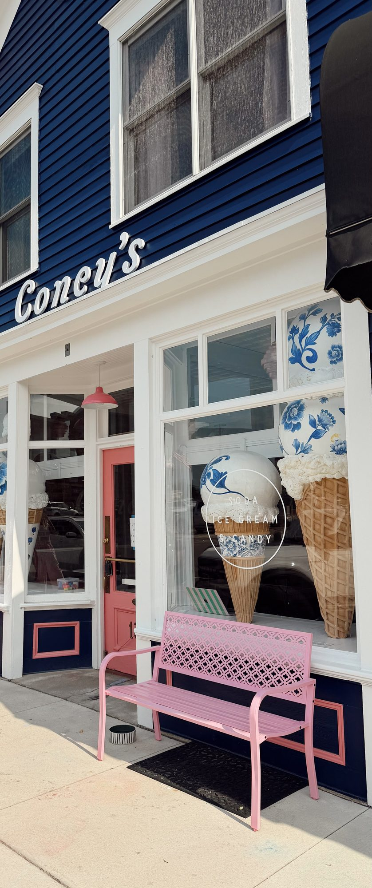
Home prices in Waconia
Waconia isn't Lake Minnetonka, and it isn't trying to be. It's its own lake town, with its own big lake and its own island.
Here's what the sales say. Over the past year the typical Waconia home sold for $475,000, and buyers have more to choose from than they did a year ago. The Lake Minnetonka column below covers all homes in the 14 communities around that lake, not just the shore.
| Waconia | Lake Minnetonka area (14 communities) | |
|---|---|---|
| Typical sale, Sep 2025 to Aug 2026 | $475,000 | $779,375 |
| Typical sale, August 2026 | $501,045 | $716,750 |
| Typical price per sq ft, August 2026 | $244 | $341 |
| Typical days on market, August 2026 | 50 | 68 |
| Homes for sale, August 2026 | 101 (69 a year earlier) | 359 |
| Months of supply, August 2026 | 4.1 | 4.6 |
| Lakefront houses sold on each lake, Oct 2025 to Oct 2026 | About ten on Lake Waconia's shore, from roughly $895,000 to $3.4 million. Too few for a single typical. | 96 on Lake Minnetonka. Typical about $2.18 million, about $620 a sq ft, about a month on the market. |
Town figures: Minneapolis Area REALTORS, August 2026 report. Lakefront: closed MLS sales, Oct. 6, 2025 to Oct. 5, 2026.
Right on the water, it's a different market. On Lake Minnetonka, the typical lakefront house that sold in the past year, October 2025 to October 2026, went for about $2.18 million, around $620 a square foot, after about a month on the market. Homes on Lake Waconia's shore change hands far less often: about ten in the same year, from roughly $895,000 to $3.4 million. If you're looking for lakeshore out here, I'll pull those sales for you.
Questions people ask
How do you get to Coney Island in Lake Waconia?
By boat only. There's no bridge, ferry or water taxi. Launch at the public boat access at Lake Waconia Regional Park, and it's about a mile, or a little less, to either island dock.
Did the Gophers really practice on Coney Island?
Yes. The University of Minnesota football team held preseason practice on the island's east end from 1903 through 1905.
Can you camp on Coney Island?
No. It's day use only, with picnic grounds, grills and a half-mile trail.
Is Lake Waconia clean?
Carver County graded it a B from 2022 through 2024, and the state doesn't list it as impaired for nutrients. It's clearer than Lake Minnetonka's western bays and not as clear as Minnetonka's main basins.
What school district is Waconia in?
Waconia Public Schools, District 110. I'll confirm the assigned schools for any address.
Where do you eat on the lake in Waconia?
Lola's Lakehouse, at 318 East Lake Street, sits right on the lake. Its Jingle Bar comes back Friday, Nov. 6, 2026.
Who to call
Carver County Parks
Island rules, the launch and the beach: Coney Island at Lake Waconia Regional Park.
Geoffrey Serdar, Serdar+Partners at Compass
952-258-3100. I'm out in Waconia more and more. If you're thinking about a lake town out here, call or text me. I'll tell you what I know and what I don't.
This guide is a personal account and local information only. Park and business details are from Carver County and the businesses' own sites as of October 2026 and can change, so confirm hours and rules before you go. Sources: Carver County Parks, the island's National Register nomination, the Minnesota Historical Society, the Carver County Historical Society newspaper index, Minneapolis Area REALTORS and closed MLS sales.